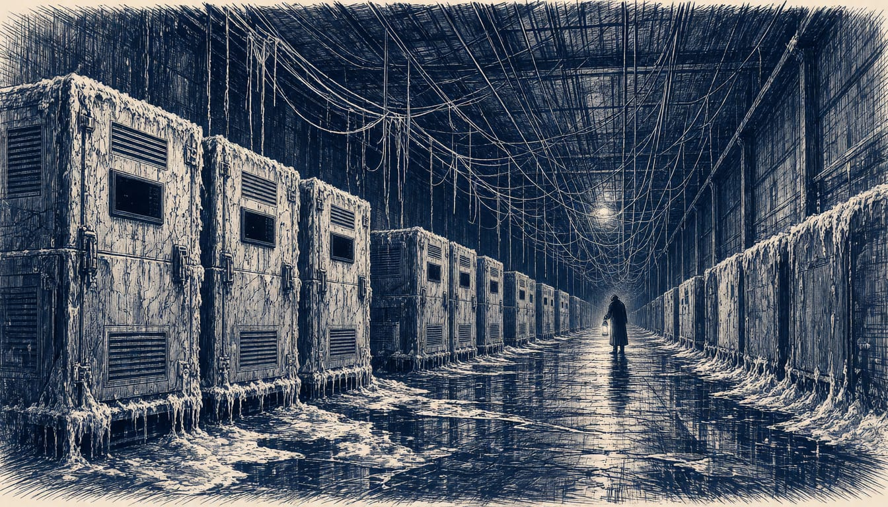

France blames Iran's Revolutionary Guard cyber unit for October attack, plans sanctions
Paris says the operation against French refrigeration systems was unprecedented in scale, and chief prosecutor Laure Beccuau is seeking international arrest warrants. ENISA warns its planned doubling of resources would never be enough.

France has officially attributed October's cyberattack to Shahid Kaveh, an offensive cyber unit of Iran's Revolutionary Guard Corps. Paris will now propose further sanctions against the Iranian entities and individuals involved.
Juhan Lepassaar, the executive director of ENISA, the European Union's cyber security agency, said the plan to double the agency's size and resources "would never be enough" but called it a first good step.
The attack targeted refrigeration controllers supplied by Danfoss and Dixell. Hackers took remote control through their web interfaces, started unlimited defrost cycles and disabled temperature sensor alerts. The legal follow-up now rests with Paris chief prosecutor Laure Beccuau, who said the Prosecutor's Office is seeking international arrest warrants. She cited findings of Farsi usage and IP addresses pointing to devices in Iran. Beccuau said the attacks were committed to serve Iran as a foreign power.
The foreign ministry called the campaign a major breach of the interests of the nation and the security of the French people. It said the campaign was unprecedented in scale and aggressiveness on French soil. It said the attacks were unjustifiable and contrary to international law and to the UN norms of responsible state behaviour in cyberspace, which Iran has endorsed. France reserved the right to take any further steps it deems necessary and proportionate. Iran's foreign ministry rejected the accusations as, in its words, "baseless and malicious".
Lepassaar warned that the targets would widen further. "Today it was fridges, tomorrow it could be routers, the day after tomorrow it could be home appliances and so forth." He declined to comment on France's accusation but said Iranian and Russian "state-aligned actors" target Europe, with "a lot of collaboration" between them. The rules meant to meet that threat, the Cyber Resilience Act's security-by-design requirements for manufacturers, apply only from 11 December 2027, as ENISA said in 2024. Until then, attacks like the new wave of incidents in refrigeration systems on 1 and 2 November 2026 fall outside it.